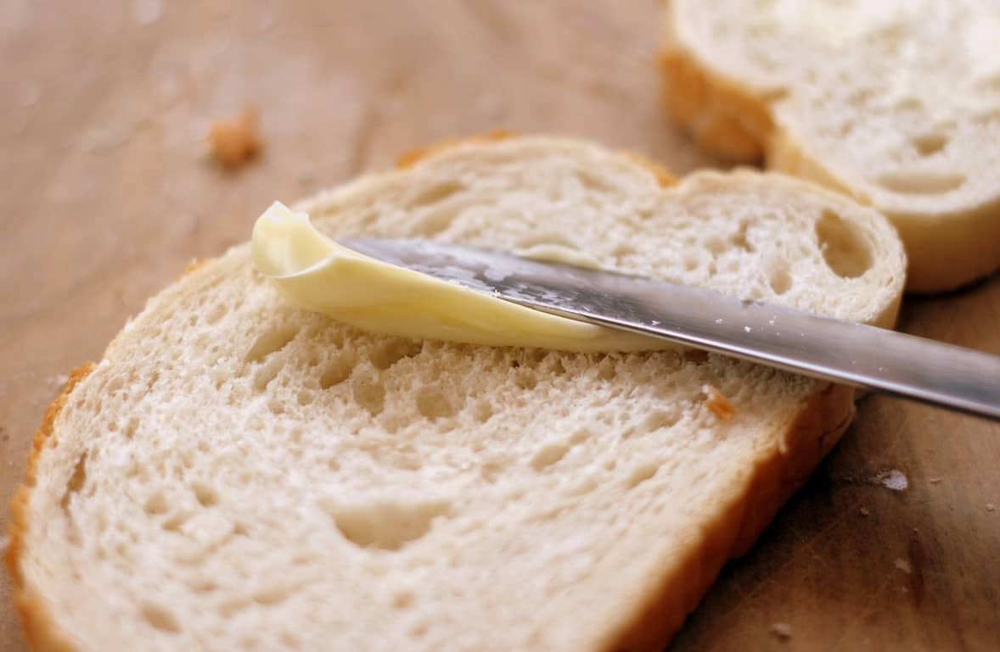

THIS IS A WEBSITE ABOUT BUTTERING BREAD

The steps to butter bread are below:
- Get the slice of bread out of the bag
- Get the butter out of the fridge or elsewhere
- Get the knife
- Use knife to scoop up some of the butter on the knife
- Spread the butter evenly on the bread using the knife
- Get the other slice of bread out of the bag and butter if needed. If not just place it on top of the already buttered bread
IMPORTANT THINGS TO REMEMBER!!!
- If the butter is cold, it could be left to get to room temperature or could be warmed up in the microwave or the pot
- Use a knife to spread the butter as it helps to spread the butter more evenly
- DO NOT SOAK THE BREAD WITH BUTTER
That concludes how to butter bread. Do use these tips so you can enjoy bread at home